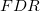
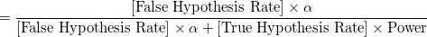
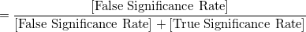
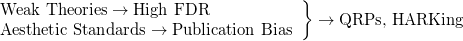

| 心理学の再現可能性 |
| 心理学の再現可能性 |
 hacking (Simmons, Nelson, & Simonsohn, 2011)
hacking (Simmons, Nelson, & Simonsohn, 2011)どのような荒唐無稽な仮説であっても、支持する報告をすることができる。
行った条件や測定した変数の一部しか報告しない
参加者を少しずつ足しながら分析を行い、有意差に至ったところで止める
様々な共変量を用いて分析を行い、有意になった組合せのみを報告する
hacking を行うことで、少なくとも何らかの分析で有意差が見つかる可能性（Type I Error 率）は61%に上がる。
統計的妥当性の疑われる研究手法を行っている心理学者は、回答者の半数以上1。
前提となる知見の根拠が乏しく、また知見ないし仮説間の相互依存性も少ないため、厳密な事前の予測が難しい。
結果の一貫性
研究内での一貫した結果が望ましいとされがちであるが、検定力が低い場合はむしろ有意になった実験のみを報告している可能性を示唆する 4
物語性
仮説検証に伴う処々の前提がしっかりと裏付けられていないので、仮に仮説を支持しない結果が得られたとしても、それが仮説を反駁したのか明確にわからない（仮説検証式の物語に耐えられない）。
新規性
「弱い理論」においては新規な真の仮説を生み出すことが難しい
現状の心理学においては、仮説検証型物語よりも、記述的研究によって新規性を探索すべき5。
メモ
- 物語性について
再現府可能性を手続き的不備に求めるのは、実証主義に共通した限界である。心理学に限ったことではない。
- 新規性について
新規な真の仮説を生み出すことの難しさは、仮説の「弱さ」とは関係ないのでは？ 強い理論であれば、それだけそこから予測できることは限られてくるわけで、それこそ新規性を生み出すのは簡単ではない。
メモここまで
データを得た後に、それに適合する仮説を構築すること（Hypothesizing After the Results are Known: HARKing6）
第1種の過誤が増大してしまう7。
陽性と判断されたもののうち、偽陽性の割合8
|  |  | (2.1) | ||
 |
 | (2.2) |
|  | (2.3) |
こうした構造により加算的にFDRが引き上げられていくと、科学研究のほとんどが偽陽性であるかもしれない
歴史的にも、存在しない現象を真実だと信じ、証明しようと努力をし続けた事例は数多くある（「無の領域」null field）
メモ
差や相関が全くないということはそもそもあり得ない。 つまり、誤って有意となることは考えられないので（偽陽性はゼロ）、は常にゼロであると思う。
メモここまで
Society for Personality and Social Psychology, Psychonomic Society, Psychological Science で
統計分析の結果報告
検定力分析、サンプルサイズ決定法、効果量、信頼区間の報告
QRPsの禁止
事前登録やデータ公開
がガイドライン化されている。
その他、Transparency and Openness Promotion (TOP) Guideline の制定による学会誌の格付け（どれくらい厳しい基準を採用するかを学術誌が選択）9
目的、方法（サンプルサイズ、デザイン、分析手法）を投稿し、査読
得られた結果がどのようなものであろうと掲載される
Open Science Framework10による事前登録制度が用いられるようになっている。
Psychfiledrawer
Curate Science
Footnotes
| 心理学の再現可能性 |